Tướng 9 đảo Thổ: lượt 3, D đổi dáng (người dùng thích D nhưng "nhìn quá giống con gốc")
Giữ cái đã thích ở D: thân đá vỏ chai đen mạch hổ phách, tinh thể ngọc lam + hổ phách, mặt dữ hàm nanh, chủ đề thiên thạch. Bỏ mọi mảnh chép dáng con gốc: hai sừng dài vuốt sau, sừng mũi, lưỡi liềm bên sườn, vòng tròn, cung quả cầu tròn, đuôi chạc. Ba biến thể, mỗi bản một bóng dáng. IoU với con gốc thấp hơn D (0,71 → 0,59–0,63) là đúng ý; thân, tay, đuôi vẫn trùng khung rig.
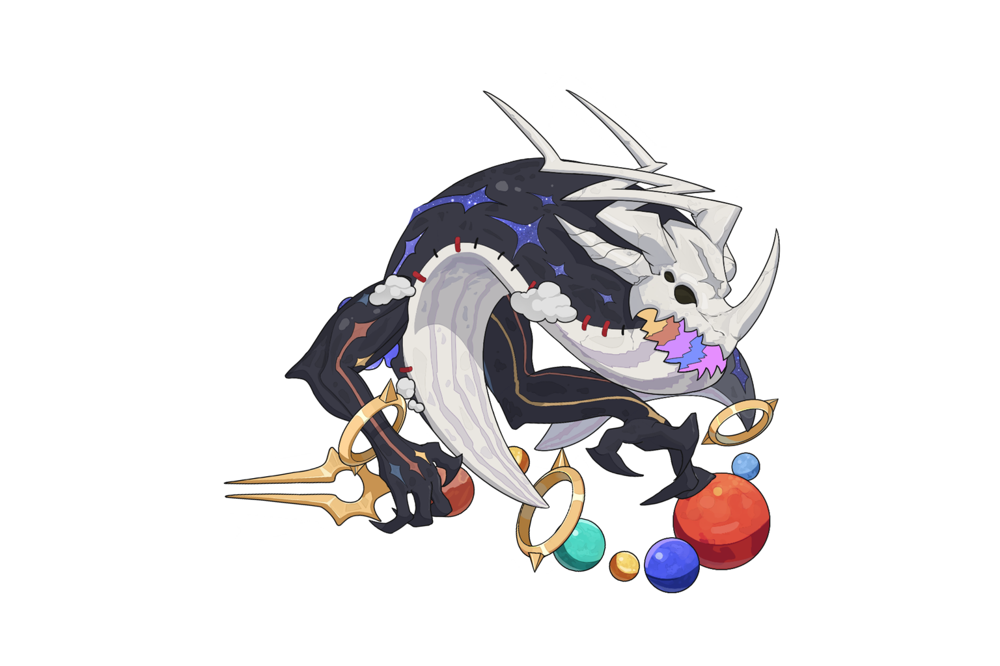
Con gốc monster_3806
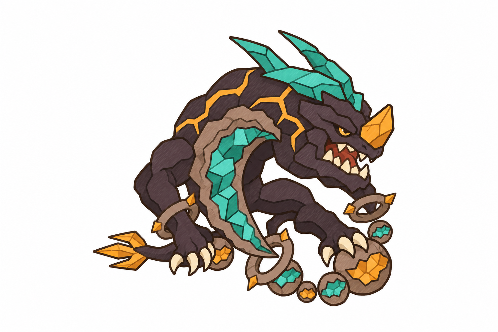
D lượt 2 (đã thích màu, chê giống con gốc)
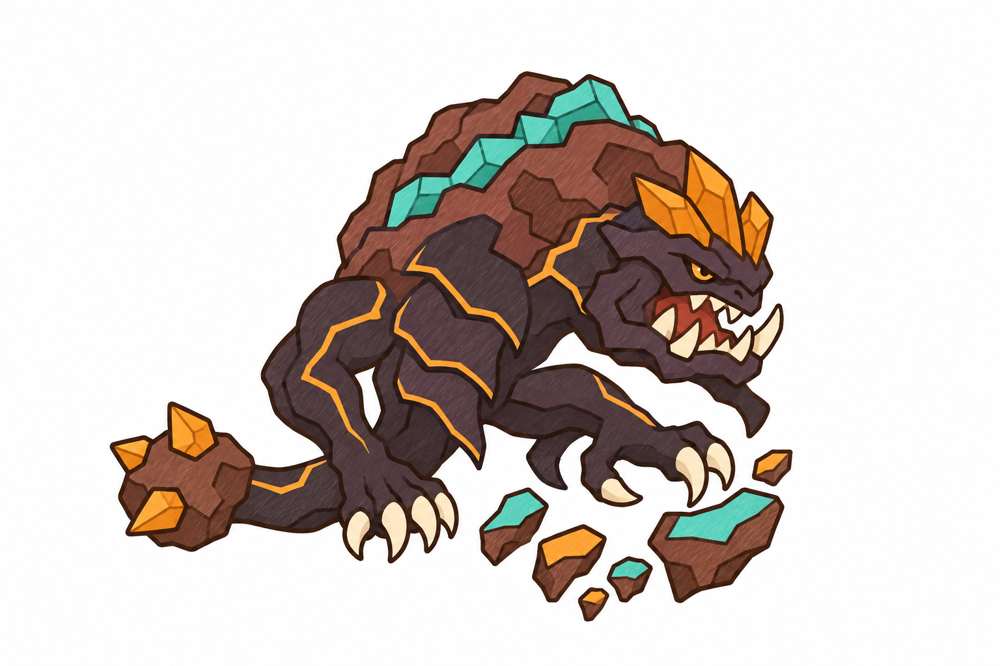
D1. Gù thiên thạch: lưng mọc một tảng thiên thạch khổng lồ nứt toạc lộ mạch ngọc lam; vương miện ba tinh thể hổ phách trên trán, hai nanh vểnh; sườn giáp đá chồng; đuôi chùy đá thiên thạch cắm gai hổ phách; đá bay là mảnh thiên thạch góc cạnh. IoU 0,592.
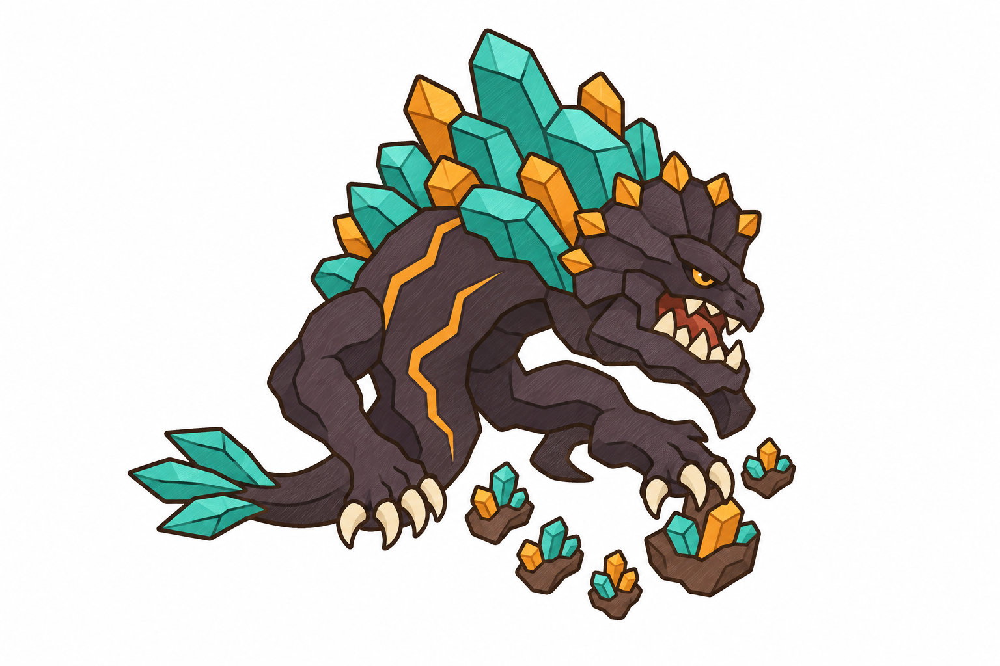
D2. Lưng rừng tinh thể: từ lưng và vai mọc một rừng trụ tinh thể ngọc lam + hổ phách cao thấp (hốc đá lộn trong ra ngoài); diềm đá sau đầu viền gai hổ phách; đuôi xoè ba lưỡi ngọc lam; đá bay là cụm tinh thể. IoU 0,612.
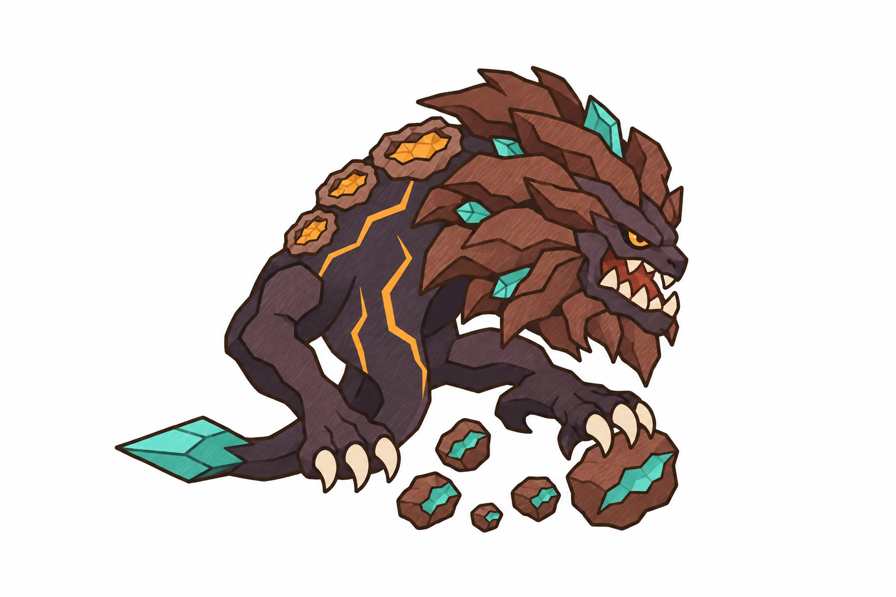
D3. Bờm thiên thạch: bờm sư tử bằng đá thiên thạch lởm chởm quanh đầu và vai; lưng có ba miệng hố va chạm chứa tinh thể hổ phách; đuôi một lưỡi giáo ngọc lam; đá bay là tảng đá có lõi ngọc lam. IoU 0,625.
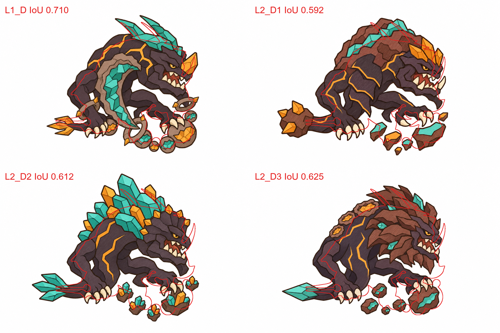
Viền đỏ = hình bóng con gốc chồng lên từng bản
Tướng 9 đảo Thổ (ải 60, mini boss): lượt 2, ba concept riêng của Claude
Lượt 1 bị nhận xét "nhìn được nhưng chưa đủ ấn tượng". Lượt 2: mỗi concept có một điểm nhấn nhìn thấy ngay trên hình, bảng màu tương phản (8 con trước đều vàng cát / nâu), trên ba rig boss có đòn hoành tráng nhất kho. Gen qua Magnific GPT 2.6, 1k high, 95 credit / ảnh. Hình con gốc chỉ dùng nội bộ.
Claude đề xuất D (chiến nhất, tương phản mạnh nhất, bộ chiêu gốc xoay vòng quanh sân rất hợp "mưa thiên thạch"). E là con độc và "Việt" nhất (dãy núi đá vôi + chùa trên lưng). F có cơ chế hay nhất (nhốt đối thủ trong hổ phách = choáng).
D. Thiên thạch thú (tinh_hach, rig monster_3806)
Con gốc: quái thú gù đen lốm đốm sao, đầu sọ, lưỡi liềm trắng, đuôi chạc vàng, vòng vàng, các quả cầuConcept D: quái thú sinh từ thiên thạch rơi xuống lòng đất: da đá vỏ chai đen có mạch hổ phách, sừng mũi pha lê hổ phách, hai sừng ngọc lam, mảnh lưỡi liềm thành hốc tinh thể bổ đôi lòng ngọc lam, đuôi mũi giáo ba chạc hổ phách, các quả cầu thành hốc đá nứt lộ lõi hổ phách / ngọc lam. IoU 0,710 (lưng, tay to hơn rig một chút).
Đánh thường (skill_01_1/2/3): ba đòn vồ cào luân phiên.
Chiêu mana "Hốc đá nổ" (skill_02): giơ tay, các hốc đá dưới chân bay lên xoay quanh người rồi lần lượt lao vào đối thủ, nứt tung lộ mảnh hổ phách.
Chiêu cuối "Mưa thiên thạch" (skill_03): bật lên vẽ một vòng lớn quanh sân cùng cả chuỗi hốc đá, rồi lao xuống đối thủ như thiên thạch, đất nứt, tinh thể bung.
Đòn phụ: skill_04 dựng đuôi giáo lên cao đâm bổ xuống (kiểu bọ cạp); skill_05 lao vụt (mờ nhoè).
Vào sân: một khối thiên thạch rơi xuống, vỏ đá vỡ ra, con thú bật dậy gầm, các hốc đá lăn về xếp quanh chân. Idle: hốc đá nhấp nhô lơ lửng, mạch hổ phách "thở".
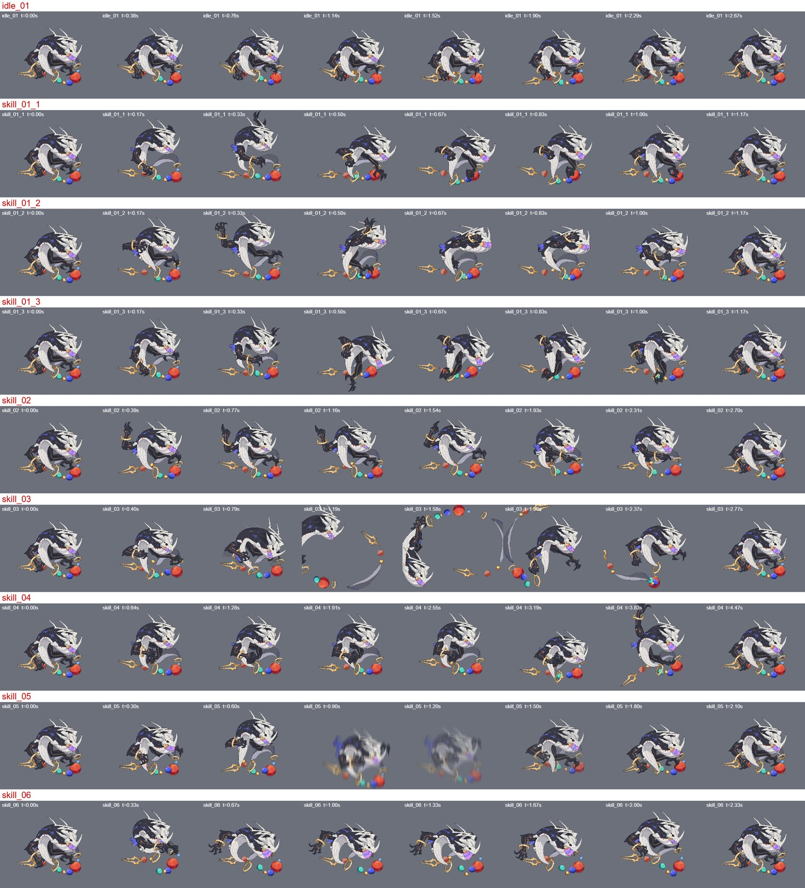
Tờ khung clip của con gốc
E. Long mạch, rồng núi (son_long, rig monster_3624)
Concept E: rồng phương Đông mà thân chính là một dãy núi: vây lưng thành hàng tháp núi đá vôi, trên đỉnh có ngôi chùa đá ba tầng mái ngói ngọc lam; thân đỏ hẻm núi, bụng kem; đầu rồng gạc đá, râu dài, bờm phiến đá; hai vây lớn thành vách đá phân tầng. IoU 0,690 (khối núi trên lưng to hơn hàng vây gốc).
Đánh thường (skill_01): quẫy thân, quất vách đá.
Chiêu mana "Núi trồi" (skill_02): vươn cổ gầm về phía đối thủ, ba tháp đá vôi trồi lên dưới chân đối thủ rồi lún xuống.
Chiêu cuối "Long mạch thức giấc" (skill_03 + skill_04): cuộn xoắn vươn cao rồi vọt hẳn khỏi khung, cả dãy tháp núi trên lưng rơi xuống quanh đối thủ như mưa núi, rồng bổ nhào về chỗ cũ.
Idle: thân uốn lượn như đang bơi trong lòng đất, râu đung đưa.
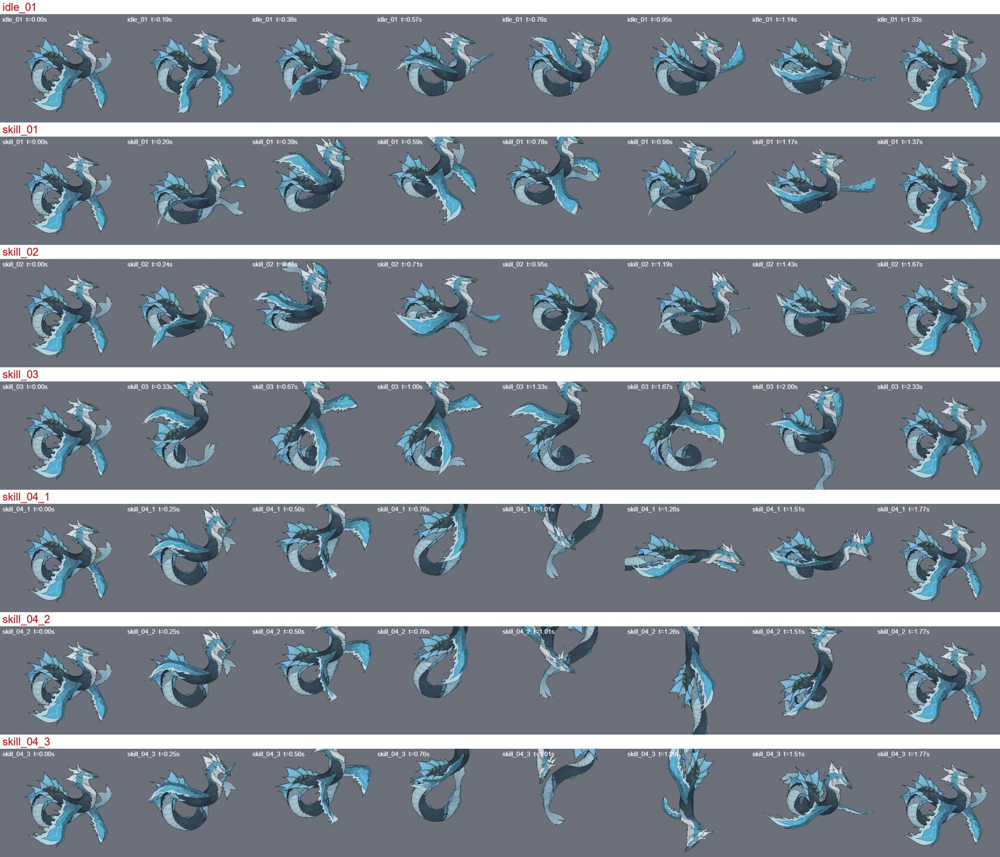
Tờ khung clip của con gốc
F. Phách long, rồng cánh hổ phách (phach_long, rig monster_3704)
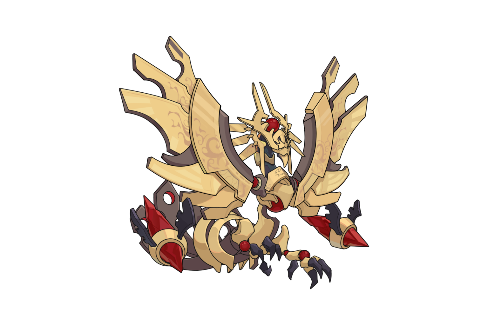
Con gốc: rồng giáp vàng cánh tấm phẳng, mũ gai ngọc đỏ, mũi nhọn đỏ
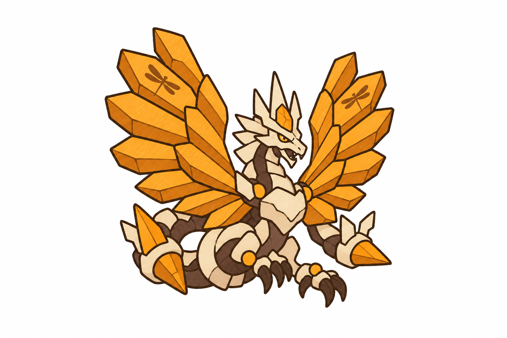
Concept F: rồng giáp đá cẩm thạch kem, đôi cánh là hai quạt lưỡi pha lê hổ phách khổng lồ, trong mỗi cánh có bóng một con chuồn chuồn hoá thạch; mũ ba gai có ngọc hổ phách; gai pha lê hổ phách ở hông. IoU 0,689 (cánh rộng hơn, thân nhỏ hơn rig).
Đánh thường (skill_01): vỗ cánh, chém lưỡi cánh.
Chiêu mana "Gai hổ phách" (skill_02 / skill_05): các gai pha lê ở hông rời ra bay găm vào đối thủ rồi về lắp lại (code lái đích, như clip gốc).
Chiêu cuối "Phong ấn hổ phách" (skill_04): bay vút khỏi khung, lưỡi hổ phách mưa xuống cắm quanh đối thủ rồi khép thành một khối hổ phách nhốt đối thủ bên trong (choáng), như côn trùng hoá thạch.
Vào sân (skill_06): khép cánh xoay một vòng rồi bung xoè cánh.
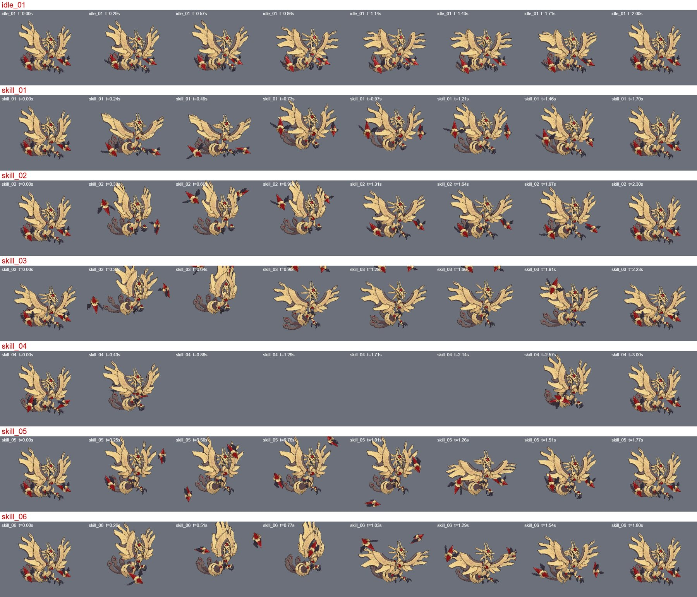
Tờ khung clip của con gốc
Lượt 1 (đã nhận xét: chưa đủ ấn tượng)
Claude tự chọn rig trong kho game tham khảo (lọc 347 con: to, có đòn mạnh, chưa dùng, hợp hệ đất; xem tờ khung chiêu từng rig) và tự lên concept. Gen qua Magnific GPT 2.6, 1k high, 95 credit / ảnh. Hình con gốc chỉ dùng nội bộ.
A. Nhân sư bia kiếm (nhan_su, rig monster_3623)
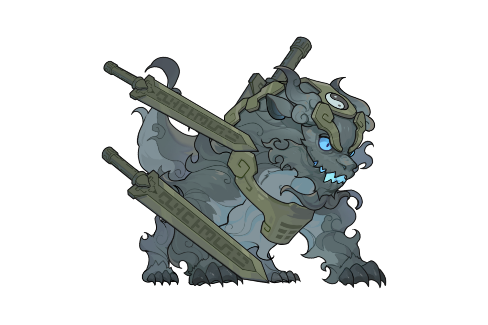
Con gốc: sư tử đá vác hai đại kiếm chéo + một kiếm sau lưng
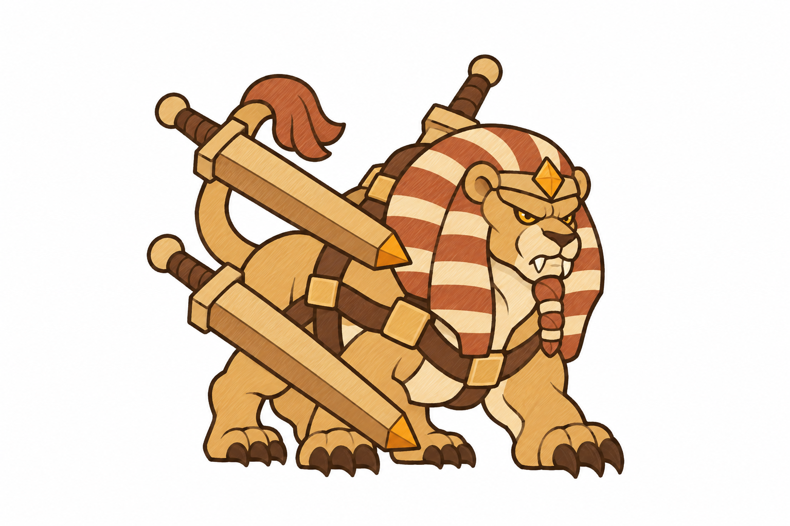
Concept A: nhân sư sa thạch, khăn trùm đầu kẻ sọc đất nung / kem thay bờm, râu tết, ba bia kiếm hình tháp mũi hổ phách, dây da. IoU 0,810. Chưa ưng: lưỡi lục giác + mũi cam + chuôi tròn giống bút chì sáp.
Đánh thường (skill_01_1): xoay người, hai bia kiếm quét ngang chém.
Chiêu mana (skill_02_1): chồm đứng hai chân sau gầm, một bia kiếm rời lưng bay găm vào đối thủ rồi về lắp lại (code lái đích).
Chiêu cuối "Mưa bia trấn mộ" (skill_03_1 / skill_04_1): ba bia kiếm vọt lên trời, cắm xuống quanh đối thủ từng nhịp, chiếc cuối to nhất nện giữa, rồi bay về lưng.
Vào sân: ba bia kiếm cắm từ trời xuống trước, nhân sư nhảy đáp giữa, rút kiếm lên lưng. Rig còn bộ clip _2 (ngậm một kiếm ngang miệng) dùng làm dạng 2 được.
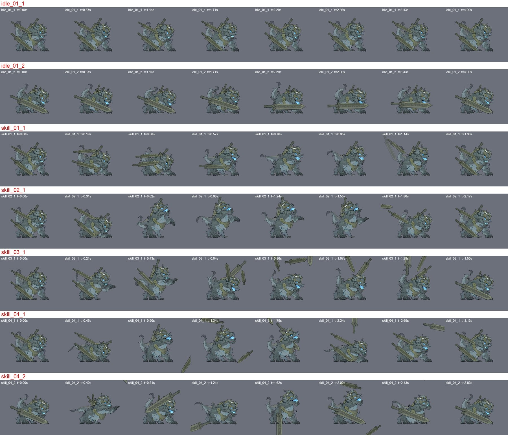
Tờ khung clip của con gốc
B. Trâu thần phá xiềng (nguu_ma, rig monster_3626)
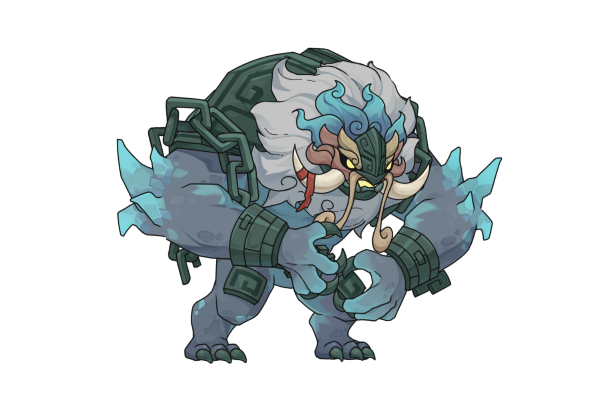
Con gốc: quái thú gù mai đồng, bờm trắng, mặt nạ, xích sắt, tinh thể lam trên tay
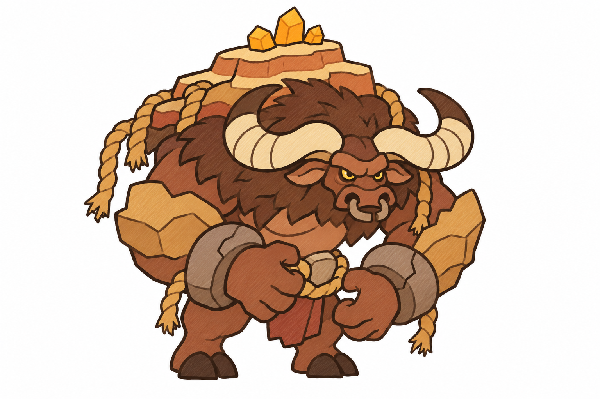
Concept B: trâu nước khổng lồ đứng hai chân, đôi sừng trâu cong, khoen mũi đá, lưng mọc núi bàn sa thạch phân tầng có ba cụm hổ phách, bờm nâu sẫm, giáp đá cẳng tay, vòng cùm đá nứt, dây thừng đứt. IoU 0,712 (đầu, vai to và cao hơn khung rig).
Đánh thường (skill_01_1): vung tay tát / đấm móc.
Chiêu mana (skill_03): quất hai sợi thừng đứt như roi, kéo giật đối thủ.
Chiêu cuối "Sơn Ngưu giáng thế" (skill_04): nhảy vọt khỏi khung, rơi xuống nện ngay trên đối thủ (code lái đích), đất nứt, cụm hổ phách trên núi bàn văng ra.
Phá xiềng / nổi giận (skill_05 + bộ clip _B của rig): gồng, vòng cùm đá vỡ tung, hổ phách mọc thêm trên lưng và vai; dùng làm dạng 2 hoặc pha nổi giận khi máu thấp của mini boss.
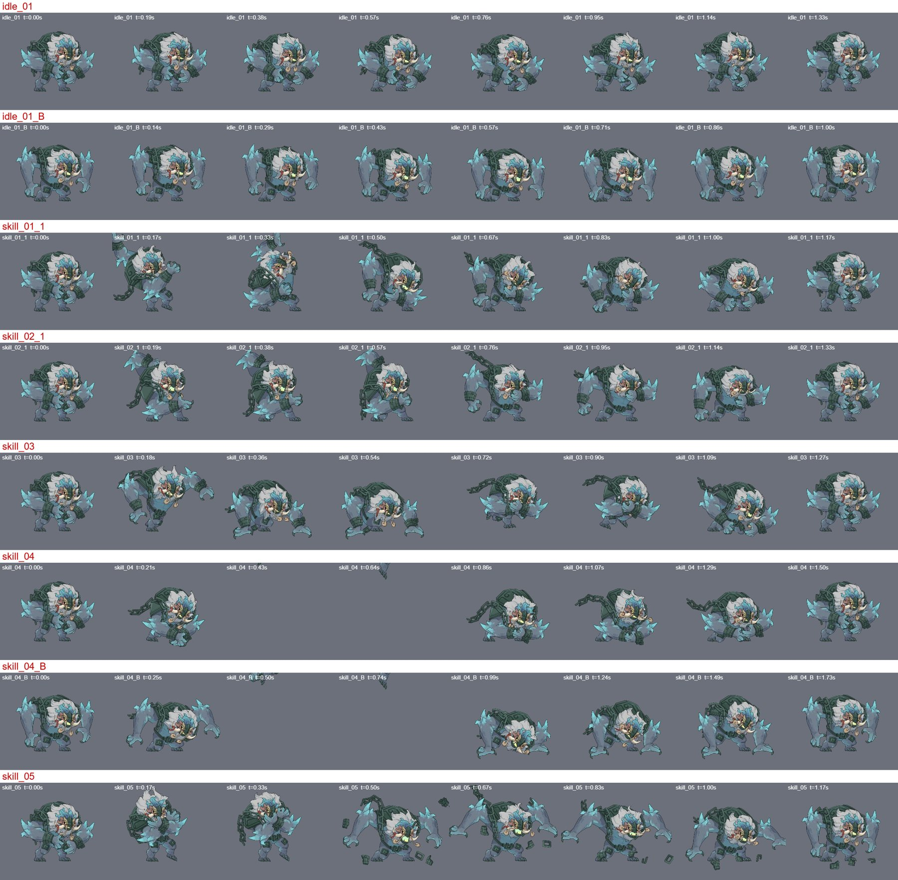
Tờ khung clip của con gốc (hàng _B là dạng nổi giận)
C. Thạch quỷ cánh đá (thach_quy, rig monster_3456)
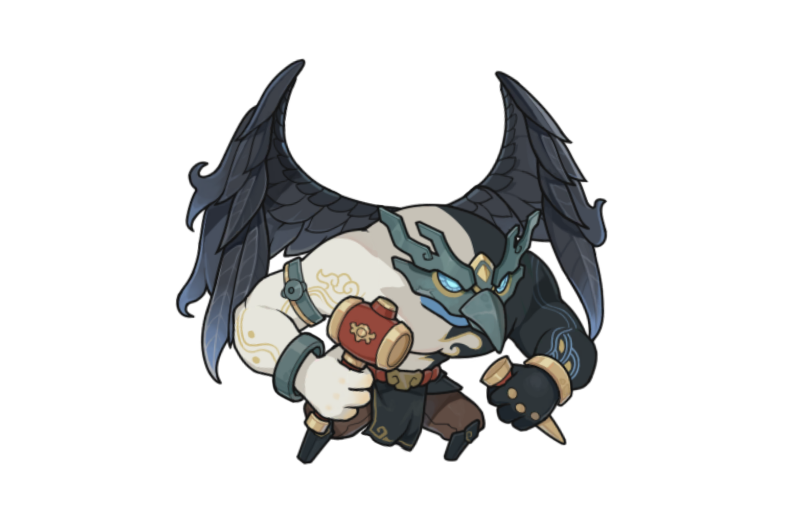
Con gốc: người quạ mặt nạ, cánh lông đen, búa nhỏ và dùi
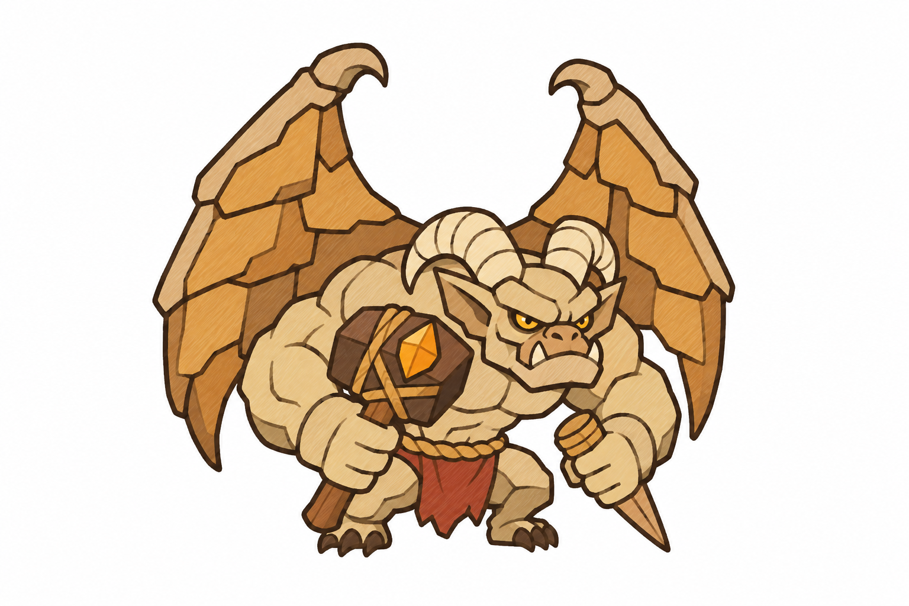
Concept C: quỷ đá giữ đền (gargoyle) sống dậy: sừng cừu, nanh vểnh, tai dơi; cánh dơi lợp phiến sa thạch; thân cơ bắp đá kem; búa tạ đầu bazan gắn hổ phách buộc thừng; cọc đá; khố đỏ đất. IoU 0,718 (cánh, thân rộng hơn).
Đánh thường (skill_01): giơ búa bổ xuống.
Chiêu mana (skill_02): dang cánh lướt ngang, búa quét.
Chiêu cuối "Thạch quỷ giáng" (skill_03): vút lên khỏi khung, bổ nhào xuống đối thủ, nện búa, phiến đá cánh rơi lả tả.
Vào sân: đứng im như tượng, lớp vỏ đá ngoài nứt vỡ rơi xuống, mở mắt, dang cánh gầm.